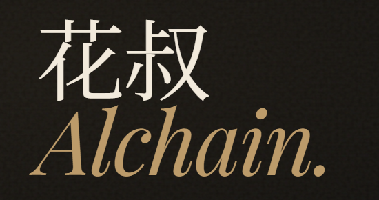

终选 A
Noto Serif SC 500
轻量现代宋 · 最干净
思源宋 500 + 暖墨色。三档里最轻、最中性，配 Playfair 最稳。
廖智强Archie
顶栏 nav
对齐你发的「花叔」参考：高对比尖衬线宋，不取暗底色票。字重比参考图略轻一档；三档故意拉开差距，不再堆更多选项。 直接回 A / B / C 即可。
cd design-demos && python -m http.server 8765
→ http://127.0.0.1:8765/logo-fonts/compare-v7-final.html

思源宋 500 + 暖墨色。三档里最轻、最中性，配 Playfair 最稳。
LXGW Neo ZhiSong · 比 Noto 多一层老铅印细节，结构更有「手感」。
Source Han Serif CN for Display · Adobe 屏显宋，笔画对比强但本页用原字重，不再加黑。
怎么选： 不用找不同了——看哪栏最顺眼。回复 A / B / C 或「都不要」即收工。
最后一轮了——不用纠细节，看顺眼就选。